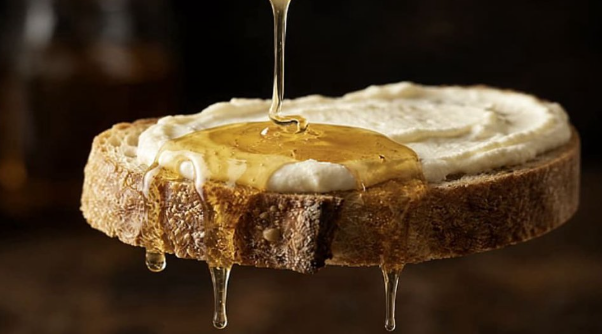

Neurochirurg: Bojíte sa Alzheimerovej choroby? (Urobte toto pred spaním)

Každé ráno sa zobudíte a prvá myšlienka je: čo som dnes zabudol? Mená, ktoré vám neprichádzajú na jazyk. Slová, ktoré miznú uprostred vety. Kľúče, ktoré sú vždy niekde inde. A ten tichý, dusivý strach — nie zo smrti, ale z toho dňa, keď už nepoznáte vlastné deti.
Roky vám hovoria, že to je prirodzená súčasť starnutia. Že to musíte prijať. Že sa s tým nedá nič robiť. Ale čo keď sa všetci mýlili — vrátane vášho lekára?
Objav, ktorý sa snažili vymazať
Keď tento neurochirurg zdieľal svoj objav s verejnosťou, reakcia bola okamžitá. Jeho videá boli odstraňované. Účty mazané. Kontaktovali ho právnici. Veľké farmaceutické spoločnosti urobili všetko preto, aby sa táto informácia nerozšírila.
Prečo taká panika? Pretože keby ľudia poznali pravdu, nikto by nekupoval tie drahé lieky, ktoré liečia len príznaky — nikdy nie príčinu. Prírodné riešenie, ktoré nie je možné patentovať, by farmaceutickému priemyslu vzalo miliardy.

▶ POZRITE SI VIDEO TERAZBezplatný prístup · Dostupné po obmedzenú dobu
Čo presne video obsahuje?
Než ho definitívne umlčali, neurochirurg natočil podrobné video. V ňom vysvetľuje skutočnú príčinu kognitívneho úpadku — ktorá je šokujúco iná, než ste si mysleli — a ten jednoduchý večerný rituál, ktorý musíte robiť každý deň, aby si mozog zachoval plnú kapacitu. Prírodnú zložku, ktorá sa používa po stáročia na mieste, kde je Alzheimerova choroba takmer neznámym pojmom.
Bezplatný prístup · Dostupné po obmedzenú dobu